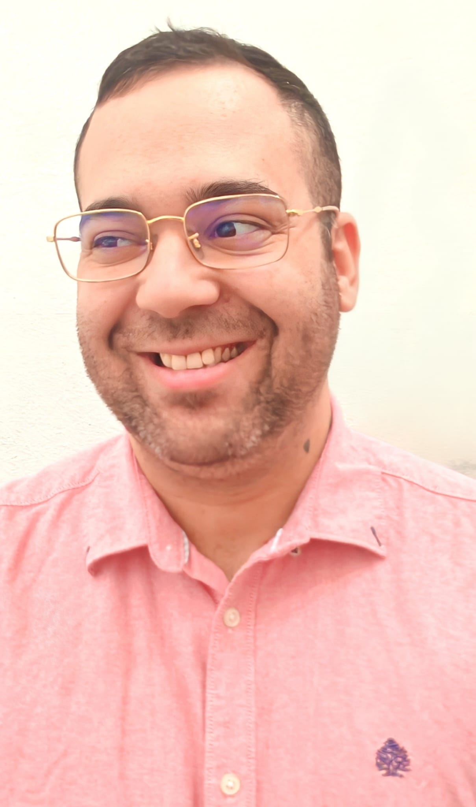
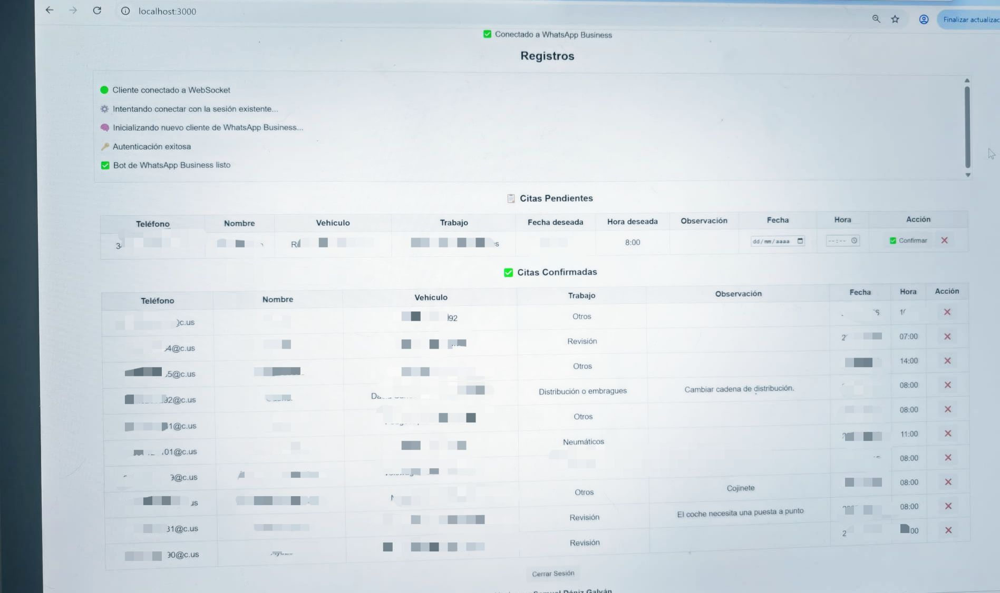
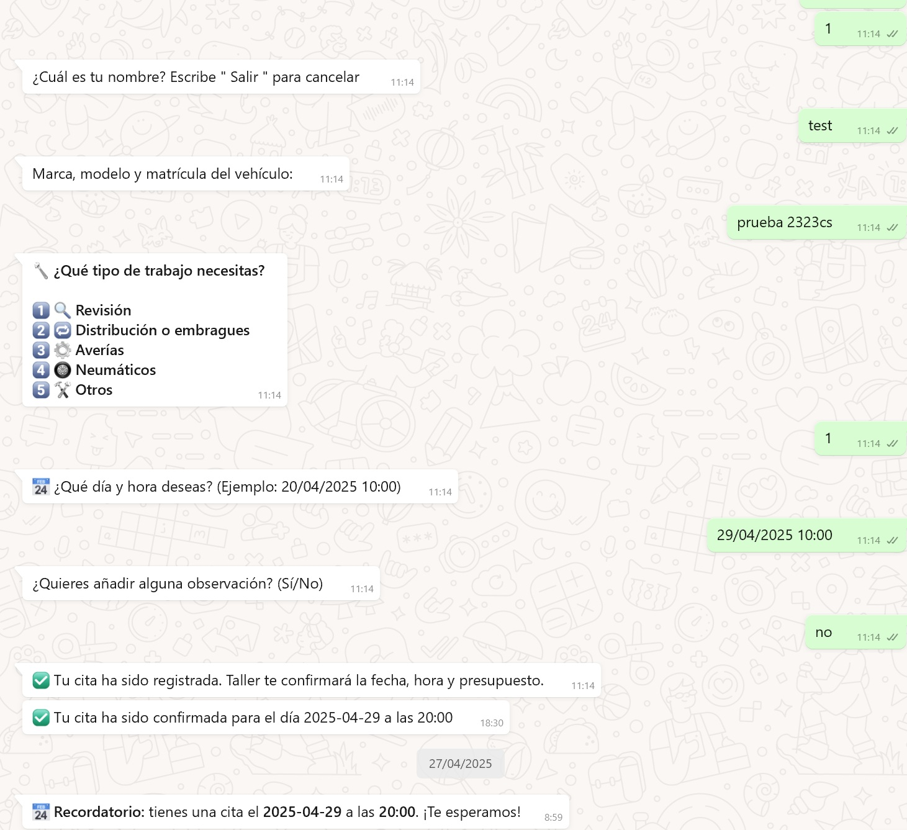
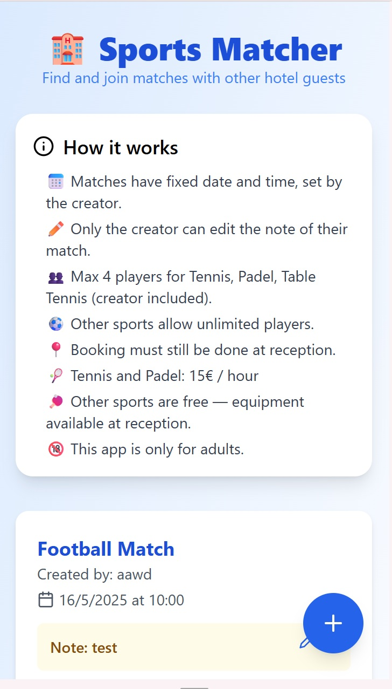
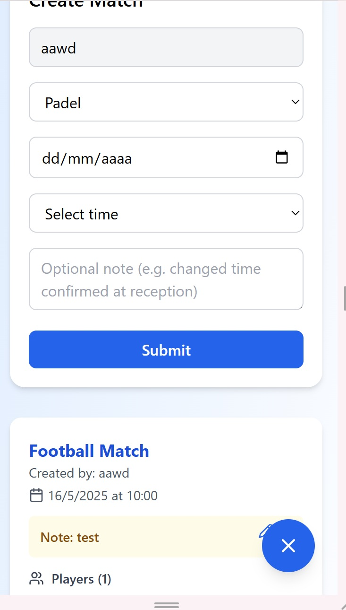

¡Hola! 👋 Soy Samuel, un apasionado de la tecnología y adicto a los retos lógicos. Desde pequeño desarmaba código con CheatEngine y montaba mis propios servidores de Metin2 antes de cumplir los 16. La curiosidad y el “¿y si…?” corren por mis venas.
Mi aventura me llevó a Alemania a los 21, donde aprendí mil cosas trabajando en hoteles y restaurantes. Pero mi corazón latía con fuerza por el código, así que en 2021 di un giro total: me formé en Desarrollo de Aplicaciones Multiplataforma (DAM Ciclo formativo de 3 años donde se aprende a desarrollar aplicaciones para móviles, web y escritorio, con tecnologías como Java, JavaScript, bases de datos (MySQL, SQLite) y frameworks como Spring o Android Studio. Incluye módulos de fundamentos, bases de datos, programación en Java, C#, Python, interfaces con Swing, desarrollo Android, empresa e inglés técnico. El proyecto final consistió en participar en XREATE, un proyecto VR en Unity en C# junto a varios institutos de la UE. ) y descubrí que cualquier idea puede convertirse en algo real con la programación.
Durante mis prácticas en BGI Group creé soluciones reales para empresas locales: un bot de WhatsApp que agiliza la atención al cliente y la app Sport-Match para el Radisson Blu. Cada proyecto es un puzzle infinitamente adictivo.
¿Qué me diferencia? 🔥 Soy autodidacta de nacimiento: aprendo rompiendo y recomponiendo. 🤖 Utilizo la IA para acelerar mi flujo de trabajo y experimentar sin miedo al error. 💡

El bot de WhatsApp permite a los clientes de una empresa solicitar citas fácilmente a través de WhatsApp y al personal gestionarlas desde un panel web, enviando confirmaciones y recordatorios automáticos. Con login individual para que cada empresa gestione sus citas y clientes por separado.

Tecnologías: Node.js, Express, whatsapp-web.js, Socket.io
Este proyecto está en un repositorio privado de GitHub y lo mostraré en una entrevista, pero no está disponible para el público.

App deportiva para hoteles que permite a los huéspedes crear y unirse a partidos en tiempo real según deporte y horario. Probar aquí (Hotel code: Radisson) Con login independiente para que cada hotel gestione sus propios usuarios y partidos.

Este proyecto está en un repositorio privado de GitHub y lo mostraré en una entrevista, pero no está disponible para el público.
Tecnologías: React, Tailwind CSS, Node.js, Express, Socket.io, PostgreSQL
JavaScript
React
Node.js
Express
MySQL
Python
Java
PostgreSQL
Socket.io
TypeScript
Tailwind CSS